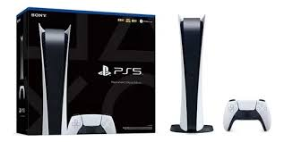
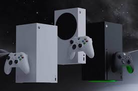
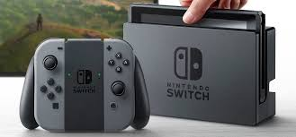

Consolas principales
Las principales consolas actuales son PlayStation 5, Xbox Series X/S y Nintendo Switch, dominando el mercado con potentes gráficos, servicios en línea y versatilidad híbrida. PlayStation 5 y Xbox ofrecen 4K y alto rendimiento, mientras Nintendo Switch destaca por su portabilidad. Históricamente, PlayStation 2 y Nintendo DS son las más vendidas



Las consolas de videojuegos son sistemas informáticos diseñados exclusivamente para el entretenimiento interactivo que, a diferencia de las computadoras genéricas, poseen un hardware y software optimizados para ejecutar juegos de forma eficiente y sencilla. Estos dispositivos funcionan como centros multimedia que se conectan a un televisor o monitor y se controlan mediante mandos especializados, permitiendo acceder a títulos en formato físico o digital. En la actualidad, el mercado se divide principalmente en consolas de sobremesa potentes como la PlayStation 5 y Xbox Series X, opciones portátiles o híbridas como la Nintendo Switch, y nuevas plataformas de PC portátiles que han ganado terreno recientemente.
| Consola | Año | Empresa |
|---|---|---|
| PlayStation 5 | 2020 | Sony |
| Xbox Series X | 2020 | Microsoft |
| Nintendo Switch | 2017 | Nintendo |
| Principales consolas modernas | ||